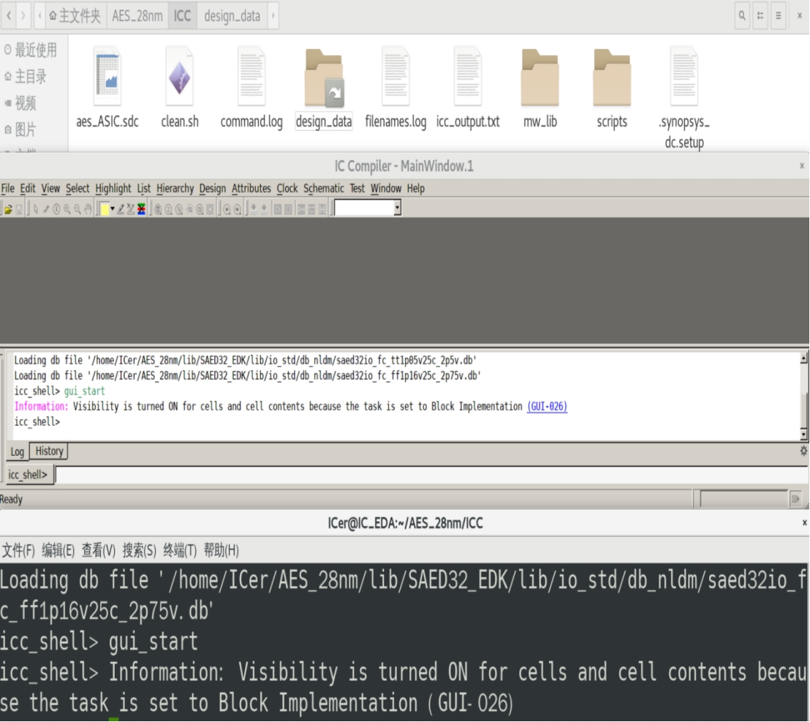
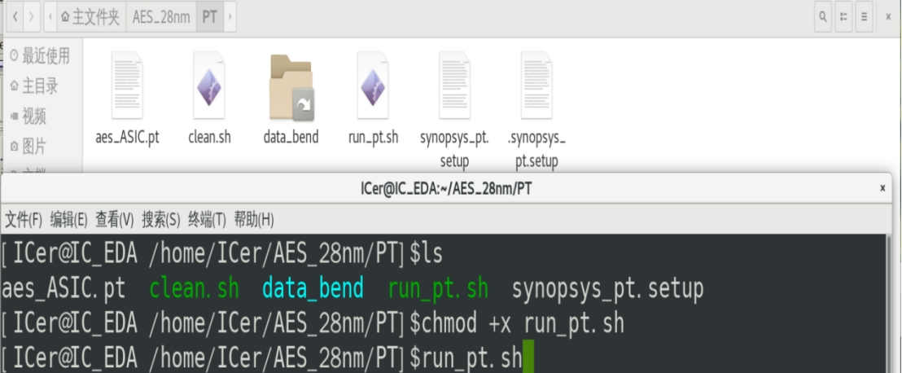

面向侧信道分析的AES硅前仿真
1 理论知识
1.1 AES算法实现
AES算法是目前应用最广泛的对称密码算法之一，在信息安全保护领域发挥着重要作用。该算法主要包含四种操作，分别是轮密钥加(Add Round Key)、字节代换(Sub Byte)、行位移(Shift Rows)和列混合(Mix Column)，其中值得格外关注的是轮密钥加运算将原始的密钥扩展出了10个轮密钥，分别用于10轮运算。经过多年的分析和使用，AES在分组密码算法中占据稳固的地位。
AES算法实现包含软件和硬件实现。软件实现通过编程语言在CPU、MCU等通用计算核心上运行，借助AES指令集扩展提升效率，具有灵活性强、部署成本低、开发周期短的优势，适用于嵌入式设备等场景多变的通用加密需求。硬件实现则通过ASIC、FPGA等专用电路固化AES逻辑，采用迭代或流水线结构设计，具备吞吐量高、延迟低、资源隔离性好及易实现硬件级侧信道防护的特点，适配安全芯片等高性能、高安全等级的专用场景。*相较于软件实现，基于AES算法的硬件实现存在开发周期长、成本高的问题。*
以AES芯片为例，开发周期包括硅前和硅后阶段。“硅前”指流片前借助EDA工具完成电路设计、仿真、验证等核心工作，以确保设计方案在功能、性能、功耗等方面符合需求且可制造的过程。与之相对，“硅后”指流片完成后对实际制造的物理芯片进行封装、全方位测试以及规模化量产的阶段，此时芯片已具备物理实体。以Alma Technologies公司开发的一款加密芯片Alma AES-P为例，物理制造成本费用主要由掩膜版和晶圆构成，且掩膜版占比大、成本高。因此，在硅前进行密码芯片全面评估至关重要，可提前发现问题以规避高昂的芯片物理制造失败损失。
1.2 侧信道分析
密码算法安全性不仅依赖于算法本身的数学理论基础，更依赖于实际部署中的实现安全性。侧信道分析就是利用软件或者硬件实现密码算法执行过程中泄露的物理信息恢复密钥等密密信息。随着深度神经网络应用于侧信道分析领域，攻击时仅需要几条信号即可完成侧信道分析。
目前，为密码算法添加掩码等防护策略有助于抵抗侧信道分析，但是正确实施掩码防护是一件繁琐、且容易出错的任务。此外，密码算法硬件实现存在开发周期长、成本高的问题。因此，加掩密码算法硬件实现更需要在硅前阶段确保没有侧信道泄露。*在硅前阶段进行泄露定位有助于早期发现泄露并向设计者反馈细节，降低因评估失败导致的芯片重设计与制造成本。*
传统泄露定位方法主要应用在硅后阶段，在硅前阶段研究存在不足。如t-Test需大量功耗轨迹，效率低；DL-SCA对掩码实现威胁大，无需预处理，但硅前阶段针对其的泄漏定位方法尚未深入研究。（基于非侧信道分析的形式验证方法，如REBECCA，依赖SAT solver，规模和时间受限）
1.3 AES硅前仿真原理
硅前设计遵循“从抽象到具体”的分层范式，通过构建RTL级行为模型、门级逻辑模型、晶体管级开关模型、版图级集几何模型等层层递进的精准模型，实现从抽象设计意图到物理实体的“无偏差映射”。但这一过程中，“设计是否正确”“物理实现后是否存在风险”无法直接判断，因此硅前仿真成为连接“设计模型”与“实体芯片”的关键桥梁。其核心原理是基于“模型驱动”与“物理规律映射”，通过EDA工具将芯片设计全流程转化为可计算的数字模型，用数学算法提前“预演”实体芯片的电学、逻辑及物理行为，确保设计无偏差落地。
为适配不同设计阶段的需求，硅前仿真（涵盖功能、时序、功耗等多维度验证目标）呈现“分层递进”的特点。在设计早期，RTL级仿真以Verilog/VHDL语言快速验证算法逻辑正确性，初步定位潜在泄露模块。进入中期，门级仿真融入逻辑门延时信息，更贴近电路实际工作状态，不仅可二次确认功能正确性，也可进一步分析逻辑级信息泄露。到了物理实现前，物理级仿真（即晶体管级和版图级设计阶段）进一步整合连线寄生参数，以高精度验证时序性能，同时为分析布局布线引入的物理级信息泄露提供支撑。硅前仿真为芯片“功能正确、性能达标”提供了全流程的前置验证与优化依据。
以AES加密芯片的功耗仿真为例，AES在运算时的敏感信息（如密钥、中间结果）会通过功耗无意识泄露，其中与敏感信息直接相关的“动态功耗”，正是侧信道分析恢复密钥的突破口。在此场景下，基于设计模型与工艺参数的硅前仿真，能够提前捕捉芯片的功耗特征，为侧信道风险预判提供依据。不过，在依托功耗仿真开展抗侧信道安全评估时，需在模型精度与仿真速度之间进行精准权衡。从RTL到晶体管级的抽象层级递进过程中，每一层级的深入都会揭示更多影响功耗的潜在依赖关系：例如，门级功耗模型可有效捕捉门驱动强度、静态功耗泄漏及IR降效应等关键因素，这些在RTL功耗模型中不可见的因素，却会显著影响数据依赖性功耗。
2 硅前仿真实验报告
采用Synopsys公司的芯片设计流程和32-28纳米工艺的电子设计套件。首先根据设计规范,使用Verilog硬件描述语言编写可综合的*RTL代码*,并对RTL代码进行仿真。然后对RTL代码进行综合，综合后生成的门级网表和RTL代码进行*等效性检验*并*做静态时序分析，*进而实现*门级仿真*。接着进行版图设计,先是根据各逻辑单元间的时序采用时序驱动布局策略来做*物理布局和全局布线*,之后在设计中插入*时钟树*。然后进行详细*布线*,并从详细布线后的版图中提取出****真实的时延值*并将其反标给网表,再作*等效性检验*、*静态时序分析*和*仿真验证****保证满足时序约束。
2.1 实验环境
仿真平台：VMware虚拟机，Centos7操作系统，Synopsys系列设计软件（VCS、DC、ICC、FM、PT）
仿真项目：
2.2 RTL级
目标：用硬件描述语言Verilog实现AES算法，并利用VCS软件实现RTL级仿真。
2.2.1 128位AES加密RTL级 Verilog实现
图1：RTL级 Verilog实现
aes_ASIC.v是ASIC芯片顶层接口模块，通过标准化的WISHBONE总线接口实现外部设备与AES加密功能的通信。
aes_top.v是WISHBONE总线对AES加密的控制模块，实现对 AES 加密流程的总线控制。
aes_cipher_top.v是128位AES加密核心模块，完整实现128位AES加密流程，包括初始化、轮密钥加、字节替换、行移位、列混淆等AES标准算法步骤。
aes_key_expand_128.v是密钥扩展模块，生成AES加密所需的轮密钥。
aes_rcon.v是轮常量生成模块，生成轮密钥所需的 8 位轮常量。
aes_sbox.v是字节替换模块，实现8位输入数据到8位输出数据的非线性映射。
代码来自Rudolf Usselmann（硬件设计领域工程师，活跃于开源硬件社区）的开源项目（www.asics.ws）
2.2.2 RTL仿真
命令行：./run_vcs
功能：利用VCS软件编译所有文件并生成仿真可执行文件，最终输出AES加密的仿真结果。
所需材料：激励文件、RTL级 Verilog实现、AED 32nm工艺库I/O接口模块。
2.3 门级
目标：通过DC综合软件将RTL代码转化为和工艺库对应的门级网表，并利用VCS软件实现门级仿真。
输入：RTL代码、工艺库
输出：网表(Netlist)、值变存储文件（VCD）、时序约束文件（SDC）、功耗文件
2.3.1 综合
（1）RTL预处理
命令行：run_dc_read_rtl.sh
功能：初始化工作目录、配置综合参数，并调用DC软件执行RTL代码读取流程。
（2）综合
命令行：run_dc_constraint_compile.sh
功能：初始化工作目录、配置综合优化参数，并调用DC软件执行执行“时序约束+综合优化”流程。
2.3.2 *等效性检验*
命令行：run_fm.scr
功能：利用FM软件将RTL和网表进行功能对比，检查门级网表的正确性。
2.3.3 门级仿真
代码行：./run_vcs
功能：基于实际的逻辑门网表和时序信息进行门级仿真。
2.3.4 门级功耗仿真
把门级生成的VCD文件和工艺库放入Primepower中，计算出一条条对应着明文的瞬时功耗曲线AES1.out。使用Primepower计算一条功耗的过程如下：
1）set search_path “/home/…/project/AES” // 设置源文件和工艺库文件所在目录
2）set link_path “* slow.db fast.db dw_foundation.sldb” //指定工艺库文件
3）read_verilog /home/…/project/AES/AES_NETLIST.v //读入网表文件
4）current_design AES // 指定编译芯片的主模块名
5）read_vcd -strip_path AES_TB/AES AES1.VCD //读入VCD文件
6）set_waveform -file /home/…/project/AES/AES1.out-format out//指定功耗输出路径
7）calculate_power -waveform // 根据网表和“值变存储文件”VCD计算功耗
2.4 晶体管级和版图级
目的：利用ICC软件将门级网表（仅包含逻辑单元连接关系）转化为符合工艺规则、满足时序/功耗/面积（PPA）要求的“物理版图”（包含单元位置、金属布线、电源网络等物理信息），并利用VCS实现物理级仿真。
输入：门级网表、工艺库、器件库、时序约束文件
输出：版图、布局布线网表
2.4.1 ICC软件使用
（1）文件准备
命令行：
chmod +x ./prep_sdc.sh
./prep_sdc.sh aes_ASIC.sdc
功能：将 DC软件生成的SDC时序约束文件转换为适合ICC软件的格式。
（2）启动ICC工具
命令行：
icc_shell
gui_start
功能：启动ICC软件的命令行交互界面。

2.4.2 布局布线前期设置
命令行：source ./scripts/1_design_setup.tcl
功能：创建设计库、导入网表和约束、配置工艺库和电源地网络，为后续的布局规划、时钟树综合、布线等步骤建立完整的设计环境，确保工具能正确识别设计数据和物理规则。
2.4.3 布局规划
命令行：source ./scripts/2_floorplan.tcl
功能：定义芯片边界、放置单元、构建电源网络、优化布局和全局布线，为后续的时钟树综合（CTS）和详细布线奠定基础。
2.4.4 布局优化
命令行：source ./scripts/3_placement.tcl
功能：实现单元精细放置优化、低功耗配置、时钟树规则定义，为后续时钟树综合（CTS）奠定基础。
2.4.5 时钟树综合
命令行：source ./scripts/4_cts.tcl
功能：构建时钟树、配置CTS参数、优化时钟路径、执行物理布线，为后续信号布线和时序收敛奠定基础。
2.4.6 布线及其优化
命令行：source ./scripts/5_route.tcl
功能：完成从时钟布线到信号布线的全流程，并确保布线结果符合物理规则和时序要求。
2.4.7 版图
命令行：source ./scripts/6_chip_finishing.tcl
功能：将布线完成的设计打磨为符合流片要求的最终版本，并输出仿真网表、LVS网表、寄生参数、物理版图等文件。
2.4.8 时序分析
命令行：
chmod +x run_pt.sh
run_pt.sh
功能：实现时序分析。

1.1.1 *等效性检验*
命令行：run_fm.scr
功能：利用FM软件验证版图之后的网表和综合后的网表功能是否等价。
2.4.9 物理级仿真
命令行：./run_vcs
功能：实现物理级仿真
2.5 其他
2.5.1 数字IC后端设计各阶段网表特性与用途
RTL综合后网表：作为前端逻辑到后端物理实现的过渡载体，仅包含核心逻辑信息，具体包括标准单元（如与门、触发器等）的实例化关系、模块间的端口连接逻辑，以及完整的设计层次结构。该网表不涉及任何物理位置延迟信息，只有门延迟（标准单元库的固有延迟参数），仅用于明确“用哪些逻辑单元实现设计功能”，是后续布局布线的基础输入。
布局后网表：在RTL综合网表基础上，融入初步物理信息并聚焦时序相关性。其内容包含：核心逻辑单元（门电路、触发器等）及互连关系；基于单元物理摆放位置估算的互连寄生参数（RC延迟）；单元的具体物理坐标，以及完整的电源地（VDD/VSS）网络。该网表涉及门延迟和互连延迟，核心用途是支持布局后时序仿真与分析，通过近似RC延迟初步验证时序性能，确保后续布线优化有明确方向，同时为物理实现的合理性提供早期评估依据。
布线后网表：作为物理实现的最终网表，完整保留与逻辑功能、物理连接相关的所有元素，具体包括：二极管、电源地端口、布线过程中产生的寄生元件（如寄生电阻、电容）；设计的层次化结构（或按需扁平化），以及所有物理端口的精确连接关系。其核心用途是支撑“版图-网表一致性检查（LVS）”，通过与实际版图的物理连接比对，确保布线无开路、短路等错误，同时为流片前的最终时序验证、设计规则检查（DRC）提供精准的物理数据支撑。
2.5.2 功耗仿真精度和速度
| 阶段 | 依赖文件 | 功耗精度 | 仿真速度 |
|---|---|---|---|
| RTL级 | RTL代码+VCD波形 | 低（±30%~50%） | 快 |
| 门级 | 门级网表+SDF文件 | 中（±10%~30%） | 中 |
| 物理级 | 布局布线后网表+SPEF | 高（±5%~10%） | 慢 |
RTL级估算的功耗精度较低，因为依赖“虚拟门级模型”而非实际物理实现。不能直接计算功耗时，而是通过生成VCD文件提供信号翻转率数据，初步功耗估算。与RTL级的“初步估算”不同，门级仿真基于实际的逻辑门网表和时序信息，基于“实际门级网表+标准单元功耗模型+真实信号翻转波形”计算动态和静态功耗，能更贴近芯片的真实功耗表现。误差主要来源于标准单元库的功耗模型，它是基于典型工艺角的统计值，与实际芯片的工艺偏差存在差异。物理级功耗仿真是基于芯片物理实现的真实结构和参数（如布局布线后的版图、器件物理参数、互连寄生参数等），完全贴合真实芯片的硬件结构，能够提供接近实际芯片工作时的功耗数据。物理级功耗仿真的误差是模型简化、输入不完整、工具算法限制和制造偏差共同作用的结果。